Major Characteristics of All Commercial Buildings in 2003
CBECS data are used to answer basic questions about the commercial buildings sector, such as: What types are there? How large are they? How old are they? and Where are they?
Results from the 2003 CBECS show that:
- The commercial buildings sector is not dominated by a single building type.
- Office buildings, the most common type of commercial building, account for 17 percent of buildings, floorspace, and energy consumed.
- Commercial buildings range widely in size and smaller buildings are much more numerous than larger buildings.
- The smallest buildings (1,001 to 5,000 square feet) account for 53 percent of buildings, but consume only 11 percent of total energy.
- The largest buildings (those larger than 500,000 square feet) constitute less than 0.2 percent of buildings, but consume 14 percent of energy.
- Buildings constructed from 1970 to 2003 comprise 58 percent of buildings, 63 percent of floorspace, and consume 65 percent of energy.
- The South Census Region, the most populous of the 4 regions, accounts for more than one-third of buildings, floorspace, and consumption.
Principal Building Activities
The commercial sector is not dominated by a single type of building (commercial activity), unlike the residential sector which is dominated by single-family homes. In fact, the 2003 survey identified more than 100 specific activities. CBECS aggregates these activities into the 14 principal building activities shown in the detailed tables and Table 1 (the mercantile category is shown with its mall and non-mall subcategories).
Two activities, office and mercantile:
- comprise the most floorspace (33 percent of total floorspace, Figure 7),
- are the most numerous (30 percent of buildings, Figure 8), and
- consume the most energy (33 percent of the total, Figure 9).
Comparison of Figures 7, 8, and 9 reveals differences between activities. For example, health care buildings, which are energy intensive, consume 9 percent of total energy, but account for just 3 percent of buildings and 4 percent of total floorspace. Conversely, warehouse and storage buildings, which are not energy intensive, consume 7 percent of energy, but comprise 12 percent of buildings and 14 percent of floorspace.
Figure 7. Floorspace in office, mercantile, warehouse/storage, and education buildings accounts for 60 percent of total commercial floorspace.
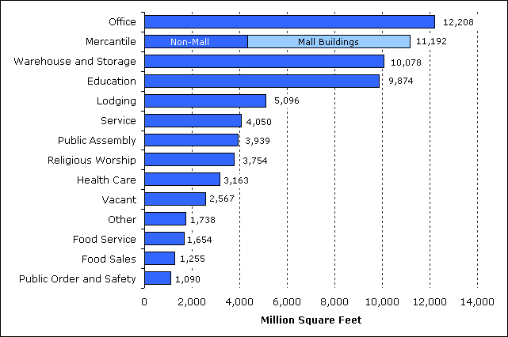Source: Energy Information Administration, 2003 Commercial Buildings Energy Consumption Survey.
Figure 8. Office buildings are the most numerous type of commercial building.
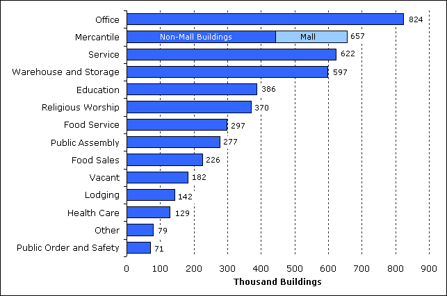Source: Energy Information Administration, 2003 Commercial Buildings Energy Consumption Survey.
Figure 9. One-third of total energy was consumed by office and mercantile buildings.
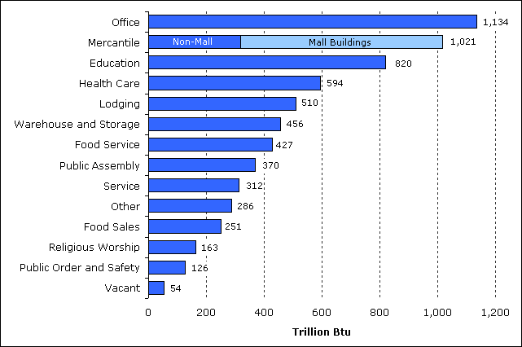Source: Energy Information Administration, 2003 Commercial Buildings Energy Consumption Survey.
Size of Buildings
The vast majority of commercial buildings are in the smaller building size categories (Figure 10). More than half of buildings were 5,000 square feet in size or smaller and nearly three-fourths are 10,000 square feet or smaller (Table 2). In contrast, the amount of energy consumed is more evenly distributed across building size categories (Figure 11). The smallest size category (1,001 to 5,000) comprises 11 percent of consumption and the three smallest categories combined (1,001 to 25,000) account for one-third of consumption, but these three categories account for nearly 90 percent of buildings (Figure 12).
In contrast to smaller commercial buildings, the percentage of consumption in larger commercial buildings greatly exceeds the percentage of buildings. For example, less than one percent of buildings are larger than 200,000 square feet in size, but these buildings consume more than one-quarter of total energy. Only five percent of buildings are larger than 50,000 square feet in size, but these buildings account for more than 55 percent of consumption.
Figure 10. The smallest buildings (1,001 to 5,000 square feet per building) account for more than half of total buildings.
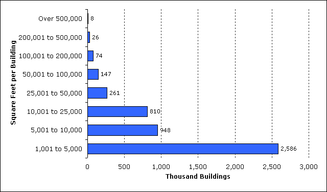Source: Energy Information Administration, 2003 Commercial Buildings Energy Consumption Survey.
Figure 11. Total energy consumed is distributed across all sizes of buildings. 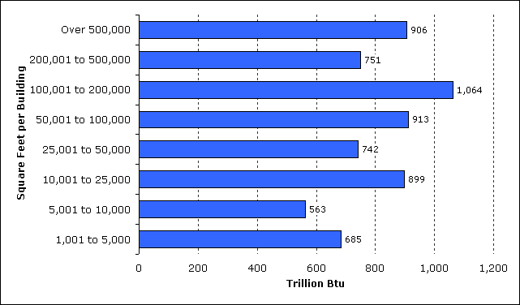
Source: Energy Information Administration, 2003 Commercial Buildings Energy Consumption Survey.
Figure 12. Number of buildings and amount of energy consumed show different trends when graphed by cumulative floorspace.
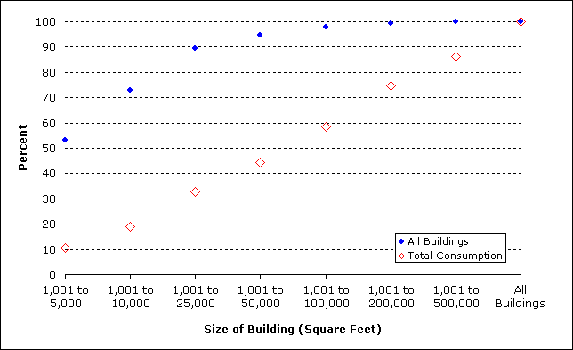Source: Energy Information Administration, 2003 Commercial Buildings Energy Consumption Survey.
Year Constructed
The 2003 CBECS aggregates buildings into the 8 "Year Constructed" categories shown in the detailed tables and Table 3. Since the 2003 CBECS surveyed existing buildings, the categories reflect surviving buildings. The amount of floorspace, number of buildings, and amount of energy consumed show a similar pattern when compared by these categories (Figures 13, 14, and 15).
We can further aggregate these data into 2 categories, "older buildings" (those constructed before 1970) and "newer buildings" (those constructed from 1970 to 2003) (Table 3). (The median year constructed for all commercial buildings is 1973.) About 2.8 million of the 4.9 million buildings estimated by the 2003 CBECS, or 58 percent, were constructed from 1970 to 2003. These buildings comprise 63 percent of total commercial floorspace and 65 percent of consumption.
Buildings are getting larger—the mean size of commercial buildings is greatest for the most recently constructed buildings (Table 3). Buildings constructed between 1970 and 2003 have a mean size of 16,000 square feet while those constructed before 1970 have a mean size of 13,100 square feet, a difference that is statistically significant.
Figure 13. Buildings that were constructed since 1970 comprise more than 60 percent of floorspace.
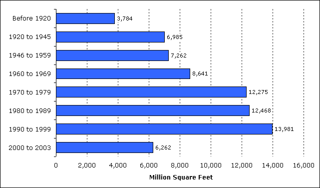Source: Energy Information Administration, 2003 Commercial Buildings Energy Consumption Survey.
Figure 14. About 58 percent of buildings have been constructed since 1970.
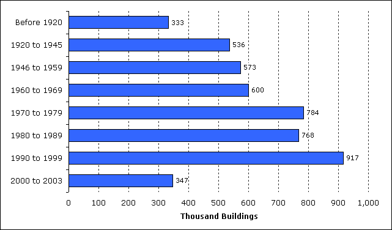Source: Energy Information Administration, 2003 Commercial Buildings Energy Consumption Survey.
Figure 15. Nearly two-thirds of energy was consumed by buildings constructed since 1970.
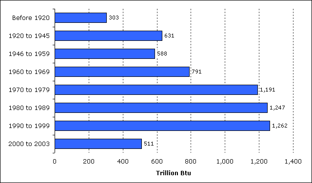Source: Energy Information Administration, 2003 Commercial Buildings Energy Consumption Survey.
Census Region
The South Census Region, the most populous of the 4 Census Regions, has the largest percentage of commercial buildings and commercial floorspace (more than one-third of both total buildings and floorspace, Table 4 and Figures 16 and 17). The estimate of energy consumed in the South is greater than that of the other regions (Figure 18), but it is not statistically significantly greater than the Midwest. The Midwest accounts for about one-fourth of commercial buildings, floorspace, and consumption.
Although buildings in the Northeast region are, on average, several thousand square feet larger than buildings in the other regions, the differences are not statistically significant (Table 4).
Figure 16. Nearly 40 percent of commercial floorspace is found in buildings in the South.
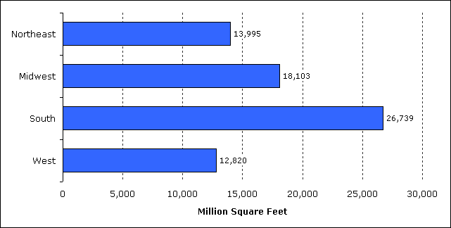Source: Energy Information Administration, 2003 Commercial Buildings Energy Consumption Survey.
Figure 17. The fewest buildings are found in the Northeast and the greatest in the South.
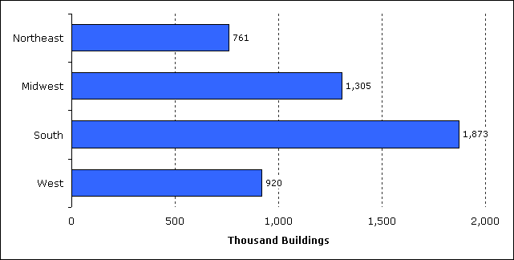Source: Energy Information Administration, 2003 Commercial Buildings Energy Consumption Survey.
Figure 18. Buildings in the South account for more than one-third of total energy consumed.
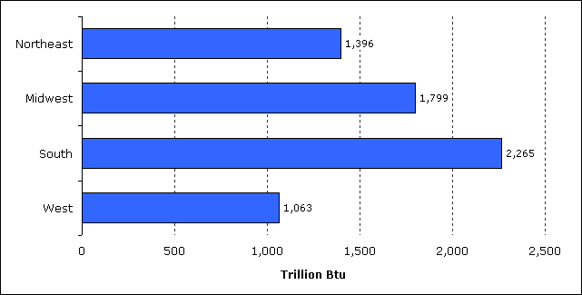Source: Energy Information Administration, 2003 Commercial Buildings Energy Consumption Survey.
Overview of Commercial Buildings, 2003
Introduction
Trends in Commercial Buildings Sector—1979 to 2003
Major Characteristics of All Commercial Buildings in 2003
2003 CBECS Detailed Tables
Building Characteristics Tables
Consumption and Expenditures Tables
End-Use Consumption Tables
Return to: CBECS Home Page
Specific questions may be directed to:
Alan Swenson
Alan Swenson
Date released: December, 2008